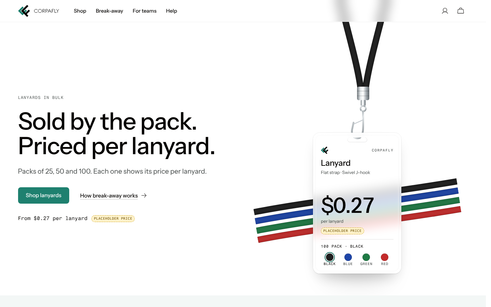
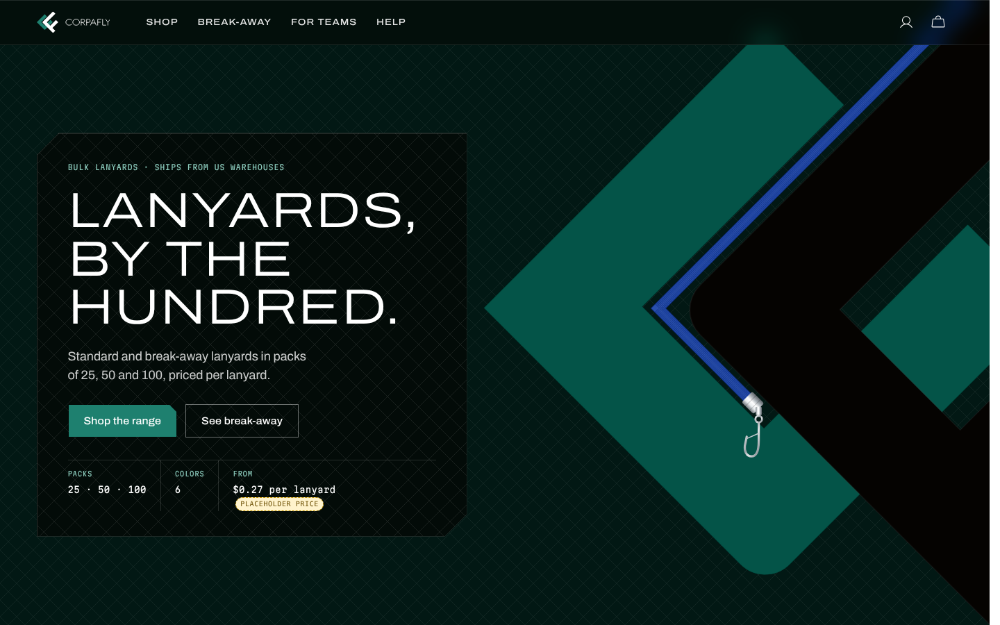
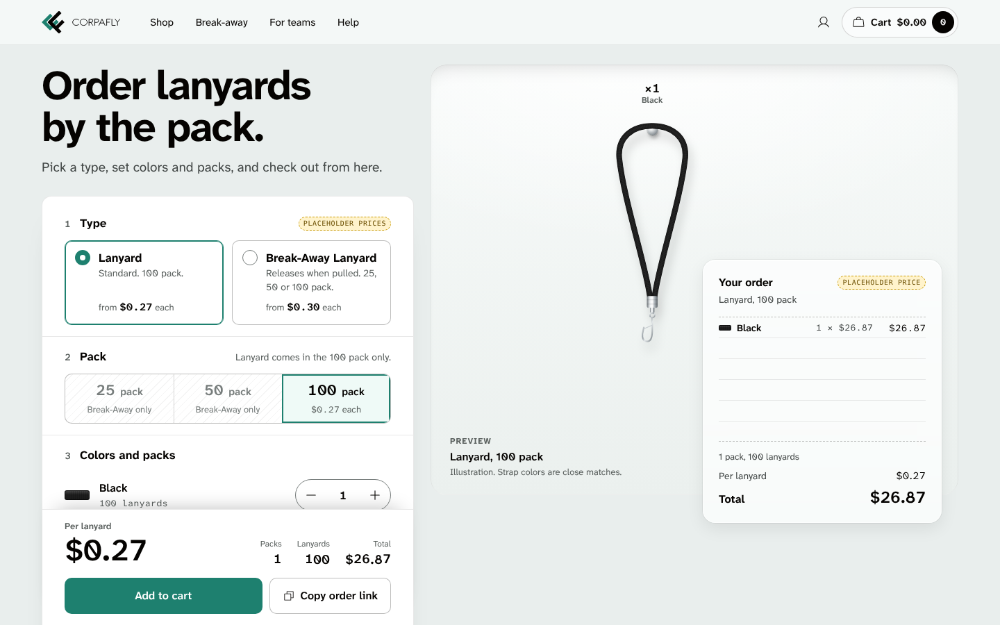

Direction AClear Sleeve
The badge sleeve is the brand's glass: a bright, quiet page where the product hangs behind real glass.
Each direction is a working static homepage with real products, desktop and mobile, and its motion running. They share the brand system and differ in concept. Prices are placeholders.

Direction AThe badge sleeve is the brand's glass: a bright, quiet page where the product hangs behind real glass.

Direction BBuilt on the mark's 45 degree grid: spec plates, chevron cuts and glass lenses over a fine lattice.

Direction CThe homepage is the order form: type, pack, colors and quantities, with the price per lanyard live.